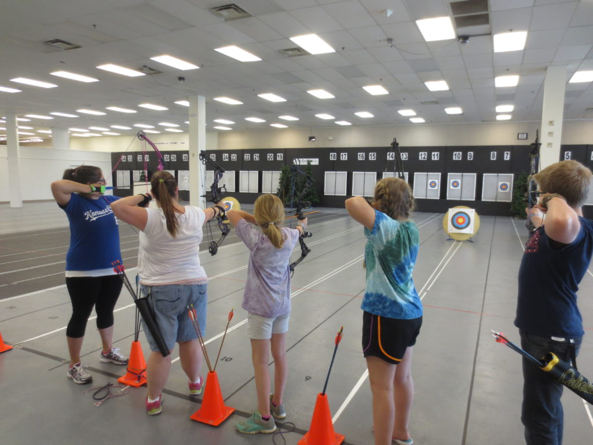

About

Founded in 2005 by Giap Nguyen, Straight to the Point Archery is a non-profit education center offering expert training in a state-of-the-art facility. We have 28 indoor shooting lanes (10 and 20 yards), 2 private coaching rooms, and access to an outdoor range. We provide lessons for all skill levels, from beginners to professionals, with a focus on safety and technique.
We offer group lessons, private classes, parties, tournaments, and youth programs, including homeschooling, YMCA, and scouting events. Our certified instructors specialize in recreational, competitive, and bowhunting archery. With strong connections to USA Archery, WSAA, WSB, and NFAA, our experienced staff is dedicated to providing quality education and support.

Giap Nguyen
Founder
He started Straight to the Point Archery in 2005. He's an avid and accomplished archer himself, having competed with the United States Archery Team in the 2000 Summer Olympics. He has three children, and started Straight to the Point in part because he was not satisfied with the archery eduction options for them in Tacoma. After The Hunger Games books and movies came out, he noticed a surge in popularity of archery among young people, especially young women, and the business has been booming ever since.